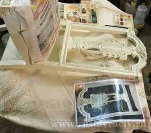
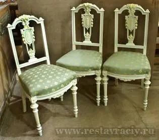
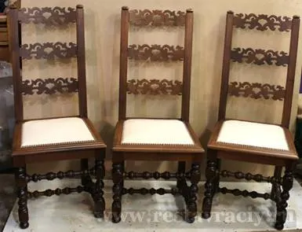
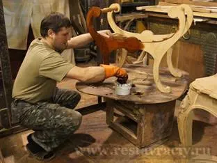
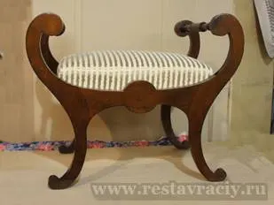
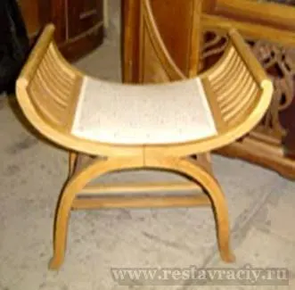

Ремонт
Изготовление стульев на заказ
Мастерская реставрации антикварной мебели предлагает услугу изготовления стульев на заказ.


В материале мастерской
Фотографии и детали



Открыть снимок у мастерской


Открыть снимок у мастерской


Открыть снимок у мастерской


Открыть снимок у мастерской


Открыть снимок у мастерской
Есть похожая вещь?
Подберите ракурсы для предварительной оценки.